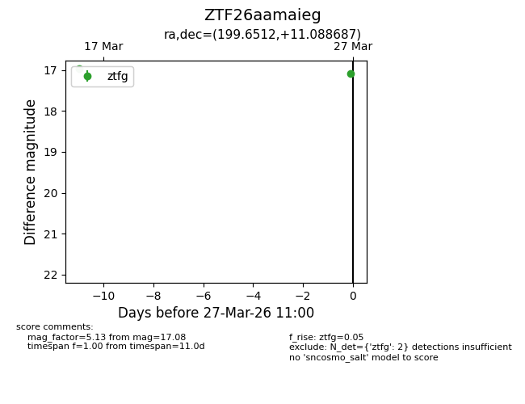
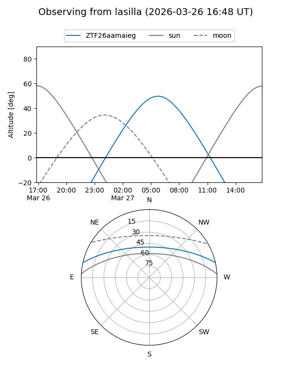
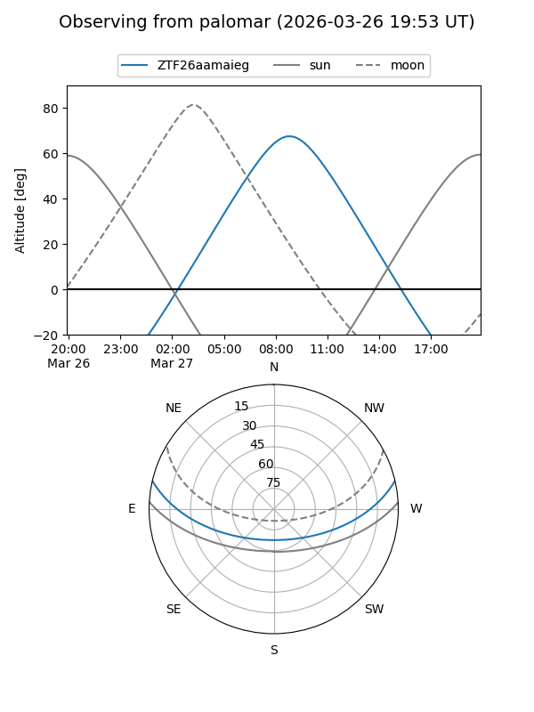

ZTF26aamaieg
Target ZTF26aamaieg at 2026-03-27 11:03
Aliases and brokers:
FINK: link
Lasair: link
ALeRCE: link
alt names
ZTF26aamaieg (ztf,fink_ztf)
Coordinates:
equatorial (ra, dec) = 199.6512,+11.08869
equatorial (HMS+DMS) = 13:18:36.29,+11:05:19.27
galactic (l, b) = (325.9502,+72.73500)
Flags:
Photometry:
last ztfg=17.08
2 ztfg detections
Lightcurve

Visibility


Additional plots